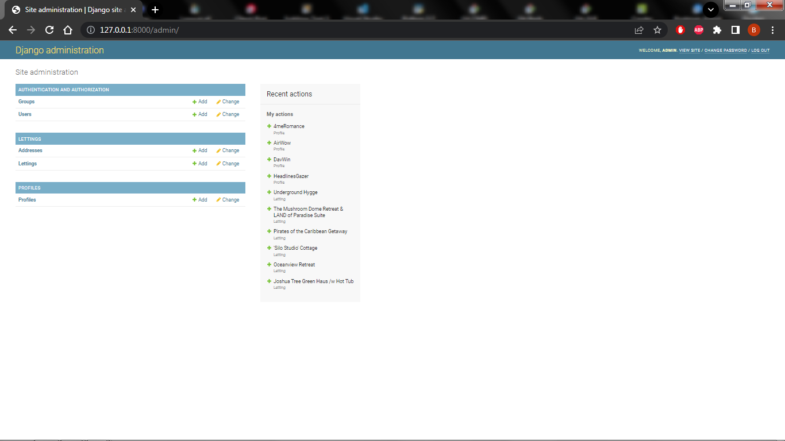

Guide d’utilisation
Introdcution
Bienvenue dans le chapitre du « Guide d’Utilisation » de notre projet. Dans cette section, nous allons vous guider à travers divers cas d’utilisation de notre application, vous montrant comment tirer le meilleur parti de ses fonctionnalités dans des situations courantes.
Que vous soyez un développeur débutant cherchant à configurer votre environnement de développement ou un utilisateur expérimenté explorant des fonctionnalités avancées, ce guide est conçu pour vous accompagner à chaque étape du processus.
Nous avons préparé une série d’exemples pratiques, de guides détaillés et de conseils utiles pour vous aider à maîtriser notre projet et à l’utiliser de manière efficace. Que vous souhaitiez exécuter l’application localement, gérer des utilisateurs, ou intégrer des technologies tierces telles que Docker, Heroku ou Sentry, nous avons tout couvert.
N’hésitez pas à explorer les différentes sections de ce guide pour trouver des informations spécifiques à votre cas d’utilisation.
Avertissement
Pour que les étapes de ce chapitre fonctionnent, vous devez au préalable avoir exécuté les étapes du chapitre : Guide de démarrage rapide
Création des variables d’environnement
1. Exécution du fichier creating_environment_variables.py
Placez-vous à la racine du projet et taper la commande suivante :
Note
L’environment virtuel doit être activé
$ pyton creating_environment_variables.py
(venv) C:\Users\Bubhux\Desktop\OP projet 13\Orange-County-Lettings\Python-OC-Lettings-FR>python creating_environment_variables.py
.env file created!
Si vous voyez le message .env file created! c’est que le fichier a bien été créé.
2. Configurer le fichier .env
Ouvrir le fichier .env
DJANGO_SECRET_KEY=^*ncmcxmaspa!*urn$bzu%apd=gntp3gkeqz8q(y6*)t!guzr5
SENTRY_DSN=
HEROKU_APP_NAME=
DEBUG=
DJANGO_SECRET_KEY est générer aléatoirement avec get_random_secret_key.
SENTRY_DSN : doit être récupérée sur votre compte Sentry.
HEROKU_APP_NAME : est le nom de l’application que vous avez attribué sur Heroku.
DEBUG : doit être mis à 0.
3. Code source de creating_environment_variables.py
Créer un modèle de fichier .env pour oc_lettings_site avec une clé secrète générée aléatoirement et des variables d’environnement préconfigurées.
Ce script génère un fichier .env qui peut être utilisé pour configurer l’environnement de l’application oc_lettings_site Il génère une clé secrète aléatoire pour la configuration de Django et inclut également des noms de variables d’environnement préconfigurés tels que :
“DJANGO_SECRET_KEY”
“SENTRY_DSN”
“HEROKU_APP_NAME”
“DEBUG”
Le fichier .env généré doit être configuré avec des valeurs appropriées pour chaque variable d’environnement avant utilisation.
Exemple d’utilisation :
Exécutez ce script pour générer un fichier .env.
Configurez les valeurs des variables d’environnement dans le fichier .env généré.
Utilisez le fichier .env pour configurer l’environnement de votre application oc_lettings_site.
Note
Remarque : Le fichier .env généré ne doit pas être partagé publiquement car il contient des informations sensibles.
"""
Créer un modèle de fichier .env pour oc_lettings_site
avec une clé secrète générée aléatoirement et des variables d'environnement préconfigurées.
Ce script génère un fichier .env qui peut être utilisé pour configurer
l'environnement de l'application oc_lettings_site
Il génère une clé secrète aléatoire pour la configuration de Django
et inclut également des noms de variables d'environnement
préconfigurés tels que :
- 'DJANGO_SECRET_KEY'
- 'SENTRY_DSN'
- 'HEROKU_APP_NAME'
- 'DEBUG'
Le fichier .env généré doit être configuré avec des valeurs appropriées
pour chaque variable d'environnement avant utilisation.
Exemple d'utilisation :
1. Exécutez ce script pour générer un fichier .env.
2. Configurez les valeurs des variables d'environnement
dans le fichier .env généré.
3. Utilisez le fichier .env pour configurer
l'environnement de votre application oc_lettings_site.
.. note::
Remarque :
Le fichier .env généré ne doit pas être partagé publiquement
car il contient des informations sensibles.
"""
from django.core.management.utils import get_random_secret_key
# Liste des noms de variables d'environnement
env_variable_names = [
'DJANGO_SECRET_KEY',
'SENTRY_DSN',
'HEROKU_APP_NAME',
'DEBUG',
]
# Générer la clé secrète aléatoire
secret_key = get_random_secret_key()
# Ouvrir le fichier .env en mode écriture
with open(".env", "w") as f:
# Écrire les noms des variables d'environnement avec leurs valeurs
f.write(f"DJANGO_SECRET_KEY={secret_key}\n")
for env_var in env_variable_names[1:]:
f.write(f"{env_var}=\n")
# Afficher un message indiquant que le modèle de fichier .env a été créé
print("\n.env file created!")
Utilisation de Docker 
1. Installation de Docker
Pour utiliser Docker Hub, il est nécessaire de créer un compte et d’installer Docker sur son ordinateur. (https://www.docker.com/)
Une fois le compte créé et docker installer sur votre ordinateur, vous pourrez envoyer des images sur votre dépôt Docker Hub
Créer un dépôt et donner lui le nom que vous souhaitez.
Note
Le dépôt créé doit être public.
Pour push une image sur votre dépôt Docker, vous devez utiliser un fichier Dockerfile, comme celui présent dans le projet. Vous pouvez en créer un ou utiliser celui existant et le modifier selon vos besoins.
# Étape 1 : Installation des dépendances de construction
# Utilisation de l'image Python 3.7.2 basée sur Alpine Linux
FROM python:3.7.2-alpine AS builder
# Installation des bibliothèques PostgreSQL
RUN apk add --no-cache postgresql-libs
# Installation des dépendances de construction temporaires et d'outils
RUN apk add --no-cache --virtual .build-deps gcc musl-dev postgresql-dev
# Étape 2 : Installation des dépendances Python
FROM builder AS python-dependencies
# Création du répertoire /app dans le conteneur
RUN mkdir /app
# Définition du répertoire de travail comme /app
WORKDIR /app
# Copie du fichier requirements.txt dans le répertoire /app/
COPY requirements.txt /app/
# Création d'un environnement virtuel
RUN python -m venv venv
# Mise à jour de pip dans l'environnement virtuel
RUN /app/venv/bin/pip install --upgrade pip
# Installation des dépendances Python depuis requirements.txt
RUN /app/venv/bin/pip install -r requirements.txt
# Étape 3 : Construction de l'image finale
FROM python:3.7.2-alpine
# Configuration du répertoire de travail
WORKDIR /app
# Configuration des variables d'environnement pour Python
ENV PYTHONDONTWRITEBYTECODE 1
ENV PYTHONUNBUFFERED 1
# Configuration des variables d'environnement spécifiques à l'application
ENV SENTRY_DSN $SENTRY_DSN
ENV HEROKU_APP_NAME $HEROKU_APP_NAME
ENV PORT 8080
# Copie du contenu local dans le répertoire /app du conteneur
COPY . /app/
# Copie des dépendances Python de l'étape python-dependencies
COPY --from=python-dependencies /app/venv /app/venv
# Collecte des fichiers statiques de l'application
RUN /app/venv/bin/python manage.py collectstatic --noinput --settings=oc_lettings_site.settings
# Création d'un dump de la base de données dans data.json
RUN /app/venv/bin/python manage.py dumpdata -o data.json
# Commande par défaut pour exécuter le serveur Django
CMD /app/venv/bin/python manage.py runserver 0.0.0.0:$PORT
2. Création et push de l’image vers votre dépôt Docker
# Construction de l'image
$ docker build -t bubhux-oc-image-build .
# Création du tag de l'image
$ docker tag bubhux-oc-image-build:latest bubhux/bubhux-oc-image-build:latest
# Push de l'image sur votre dépôt Docker
$ docker push bubhux/bubhux-oc-image-build:latest
Note
Remplacer bubhux par le “Namespace” et le “repository name” choisis sur Docker Hub
$ docker push Namespace/repository_name:latest
3. Tester le fonctionnement de l’image
Pour lancer l’image créée localement exécuter les étapes suivantes.
Important
Si vous utilisez Docker Desktop n’oubliez pas de le lancer avant.
# Connexion à Docker
$ docker login
# Lancement de l'image en local
$ docker run -it -p 8080:8080 bubhux/bubhux-oc-image-build:latest
Si vous souhaitez naviguer dans le projet pour vérifier des dossiers ou des fichiers.
$ docker run -it bubhux/bubhux-oc-image-build:latest /bin/sh
Gestion est création des utilisateurs avec Django 
1. Administration des utilisateurs
Pour créer et gérer des utilisateurs, cela peut être fait de plusieurs manières par le shell Django ou par l’interface d’administration de Django. Qui est accessible à l’adresse. (http://127.0.0.1:8000/admin/)
Note
nom d’utilisateur : admin
mots de passe : Abc1234!
Une fois connecter, vous pourrez administrer les utilisateurs et les objets Lettings et Addresses.
Utilisation de Sentry 
1. Configuration de Sentry
Pour utiliser Sentry et pouvoir utiliser le monitoring sur le projet accédé à votre compte.
Créer un nouveau projet
Choisissez une plateforme pour le projet, dans notre cas Django.
Choisissez une équipe pour votre projet ensuite cliquer sur : Créer un projet
Une fois le projet créé, vous pourrez récupérer la clé SENTRY_DSN à intégrer dans le fichier .env
Une fois toutes ces étapes exécutées et le serveur local lancer, vous pourrez visualiser sur Sentry l’activité de l’application.
Des erreurs intentionnelles, on était introduite dans l’application qui ont pour objectif de déclencher des notifications d’alertes dans Sentry.
Avertissement
Exemple lors de la saisie d’une url avec un id invalide dans la base de données.
Une page personnalisée sera affichée et l’erreur remontera sur Sentry comme montrer sur la capture d’écran. Elle correspond à « Erreur 500 » »

Utilisation de GitHub Actions 
Pour utiliser l’outil d’intégration continue GitHub Actions
GitHub Actions est un service d’intégration continue (CI) et de déploiement continu (CD) fourni par GitHub. Il vous permet d’automatiser diverses tâches liées à votre projet, telles que les tests, les déploiements et plus encore. Dans ce chapitre, nous allons expliquer comment configurer et utiliser GitHub Actions pour améliorer votre flux de travail de développement.
1. Configuration de GitHub Actions
Pour que le workflow de GitHub Actions fonctionne il vous faudra parametrer Secrets and variables dans la partie Settings de votre projet. Ouvrez le menu déroulant Secrets and variables et cliquer sur Actions.
Ensuite cliquer New repository secret
Important
Il faudra créer les secrets suivants :
DJANGO_SECRET_KEY
DOCKER_PASSWORD
DOCKER_USERNAME
HEROKU_API_KEY
HEROKU_APP_NAME
HEROKU_EMAIL
SENTRY_DSN
Fichier de configuration yaml pour GitHub Actions qui déclenche le workflow à chaque push ou pull request sur la branche master :
name: Django CI/CD Master
on:
push:
branches:
- master
pull_request:
branches:
- master
jobs:
build_and_test:
runs-on: ubuntu-latest
strategy:
matrix:
python-version: ["3.7"]
steps:
- name: Checkout code
uses: actions/checkout@v3
- name: Set up Python ${{ matrix.python-version }}
uses: actions/setup-python@v3
with:
python-version: ${{ matrix.python-version }}
- name: Install Dependencies
run: |
python -m pip install --upgrade pip
pip install -r requirements.txt
- name: Run linting
run: flake8
- name: Run tests with pytest
env:
SECRET_KEY: ${{ secrets.DJANGO_SECRET_KEY }}
DEBUG: 0
run: pytest
- name: Run Django tests
run: python manage.py test
- name: Run tests with coverage
run: |
coverage run --omit=*/tests.py manage.py test
- name: Check test coverage
run: coverage report --fail-under=80
build_and_push_to_dockerhub:
needs: build_and_test
runs-on: ubuntu-latest
steps:
- name: Checkout repository
uses: actions/checkout@v3
- name: Set up Docker Buildx
uses: docker/setup-buildx-action@v2
- name: Log into Docker Hub
uses: docker/login-action@v2
with:
username: ${{ secrets.DOCKER_USERNAME }}
password: ${{ secrets.DOCKER_PASSWORD }}
- name: Build and push Docker image
run: |
docker buildx build --load --file Dockerfile --tag bubhux/bubhux-oc-image-build:${{ github.sha }} --tag bubhux/bubhux-oc-image-build:latest .
docker push bubhux/bubhux-oc-image-build:${{ github.sha }}
docker push bubhux/bubhux-oc-image-build:latest
- name: Set IMAGE_ID environment variable
run: |
IMAGE_ID=$(docker inspect --format='{{.Id}}' bubhux/bubhux-oc-image-build:${{ github.sha }})
echo "IMAGE_ID=$IMAGE_ID" >> $GITHUB_ENV
- name: Tag Docker image with commit hash
run: |
docker tag bubhux/bubhux-oc-image-build:${{ github.sha }} bubhux/bubhux-oc-image-build:commit-${{ github.sha }}
deploy_to_heroku:
needs: build_and_push_to_dockerhub
runs-on: ubuntu-latest
steps:
- name: Checkout code
uses: actions/checkout@v3
- name: Install Heroku CLI
run: curl https://cli-assets.heroku.com/install.sh | sh
- name: Purge Heroku cache
run: |
heroku plugins:install heroku-repo
heroku repo:purge_cache -a ${{ secrets.HEROKU_APP_NAME }}
- name: Log in to Heroku Container Registry
run: heroku container:login
env:
HEROKU_API_KEY: ${{ secrets.HEROKU_API_KEY }}
- name: Push to Heroku Container Registry
run: heroku container:push -a ${{ secrets.HEROKU_APP_NAME }} web
- name: Deploy to Heroku
run: |
HEROKU_DEBUG=1 heroku container:release -a ${{ secrets.HEROKU_APP_NAME }} web
2. Lancer le workflow
Dans cet exemple, nous avons configuré un workflow qui s’exécute à chaque push sur la branche master. Le workflow vérifie le code en installant les dépendances, puis en exécutant les tests à l’aide de Pytest ainsi quel les tests avec Coverage.
Note
Capture d’écran du workflow créer par le fichier ci_cd_branch_master.yml du projet.
Vous pouvez voir ce flux de travail avec plus de détails sur toutes les étapes :
build_and_test
build_and_push_to_dockerhub
deploy_to_heroku
Lancement de l’apllication
Utilisez ces étapes pour exécuter l’application :
1. Lancez le serveur local
Assurez-vous d’être dans le dossier principal du projet avec l’environnement virtuel activé.
Utilisez la commande suivante :
$ python manage.py runserver
Accédez à l’application dans le navigateur de votre choix : - Ouvrez votre navigateur web. - Rendez-vous à l’adresse : http://127.0.0.1:8000/